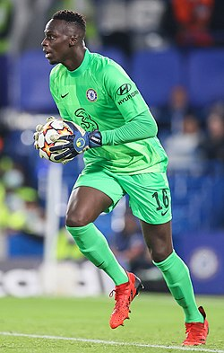
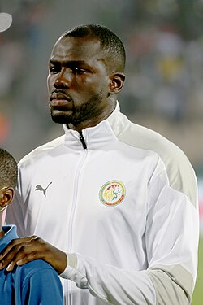
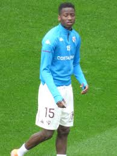
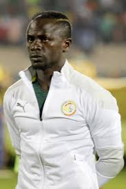
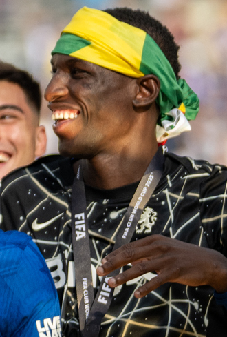

| Édouard Mendy |
Portero |
33 |
Édouard Osoque Mendy (Montivilliers, Francia, 1 de marzo de 1992) es un portero senegalés que juega en el Al-Ahli de Arabia Saudita. |
 |
| Kalidou Koulibaly |
Defensa central |
34 |
Kalidou Koulibaly (Saint-Dié-des-Vosges, Francia, 20 de junio de 1991) es un defensa senegalés que juega en el Al-Hilal de Arabia Saudita. |
 |
| Idrissa Gueye |
Mediocampista |
36 |
Idrissa Gana Gueye (Dakar, 26 de septiembre de 1989) es un mediocampista senegalés que juega en el Everton de Inglaterra. |
 |
| Pape Matar Sarr |
Mediocampista |
22 |
Pape Matar Sarr (Thiaroye, 14 de septiembre de 2002) es un mediocampista senegalés que juega en el Tottenham Hotspur. |
 |
| Sadio Mané |
Extremo |
33 |
Sadio Mané (Bambali, 10 de abril de 1992) es un delantero senegalés que juega en el Al-Nassr de Arabia Saudita. |
 |
| Nicolas Jackson |
Delantero |
24 |
Nicolas Jackson (Banjul, Gambia, 20 de junio de 2001) es un delantero senegalés que juega en el Chelsea de Inglaterra. |
 |